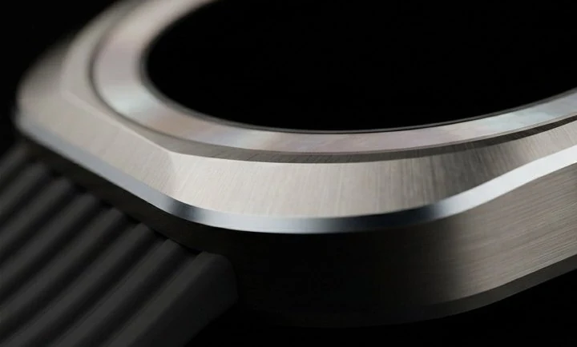
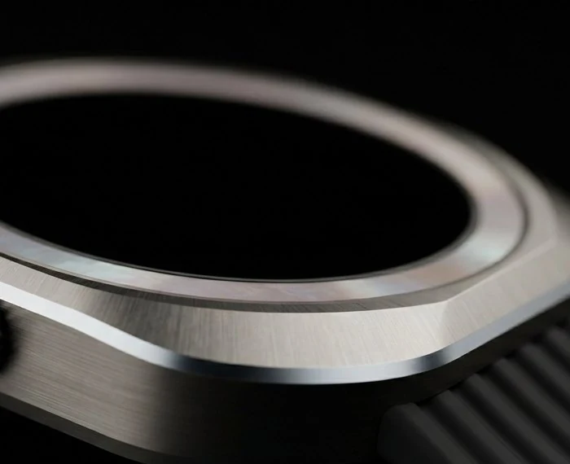
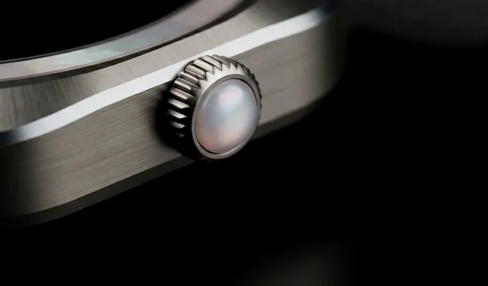
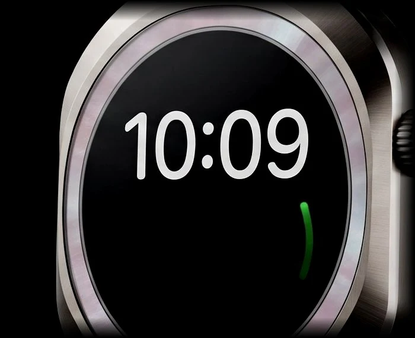
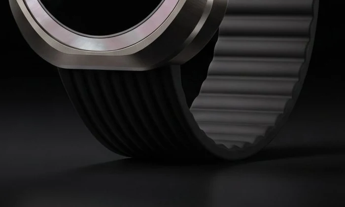
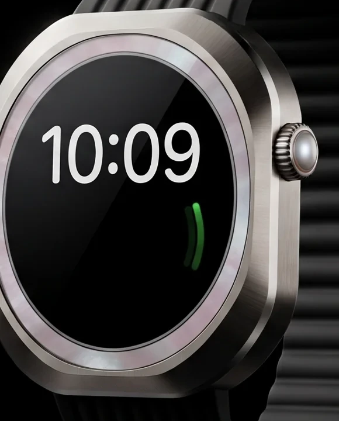
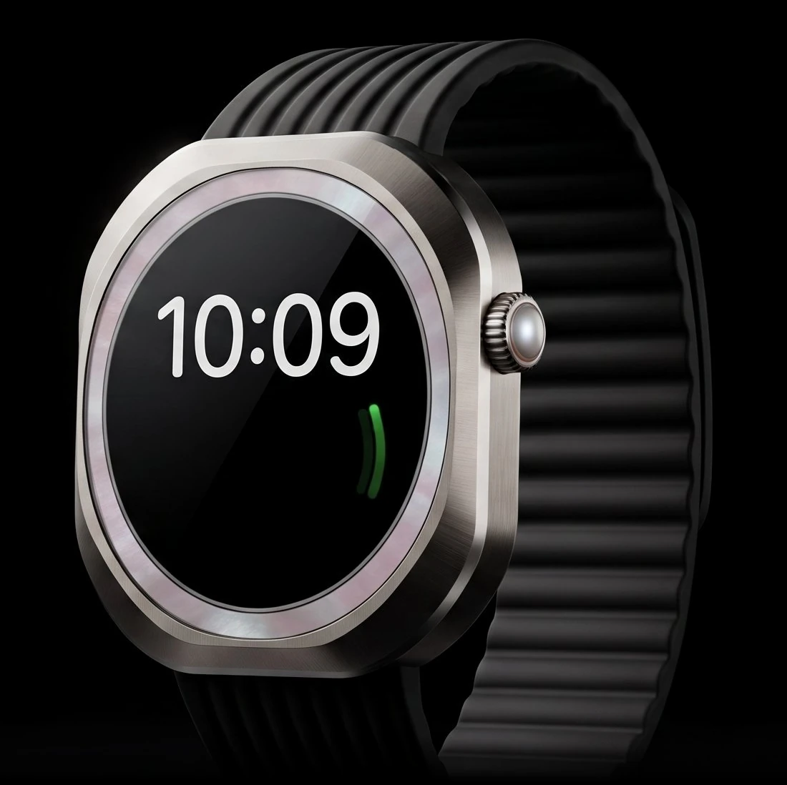
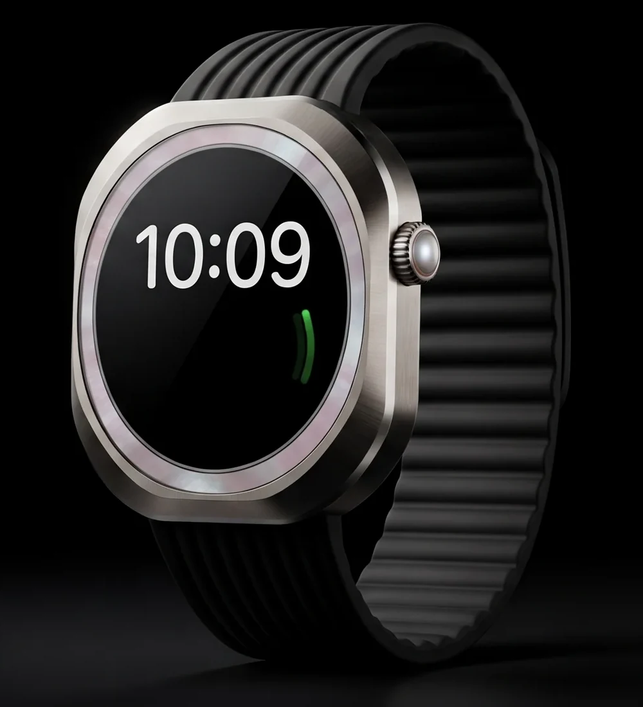
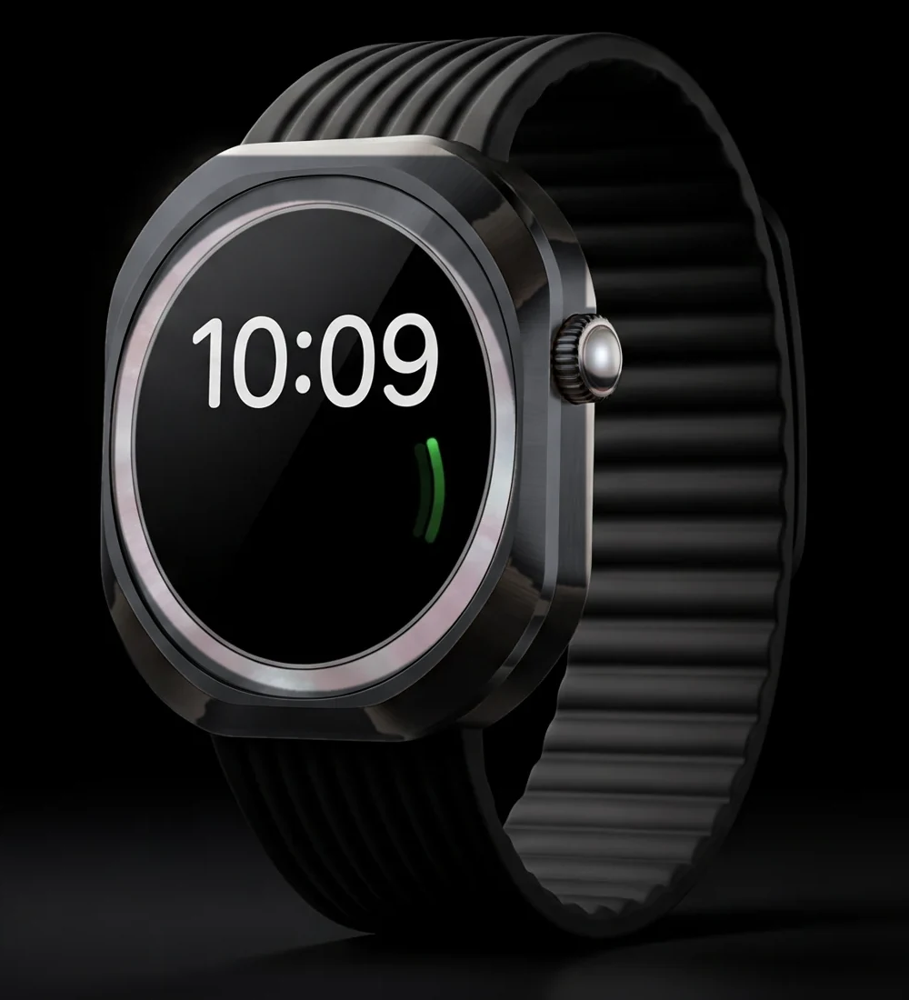
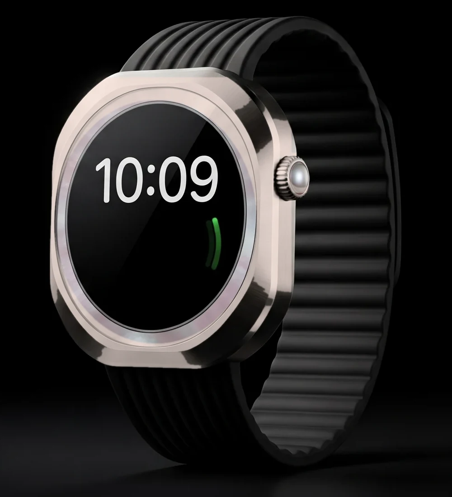

Resting heart rate
54bpm
Rest a fingertip on the pearl crown for a rhythm check. In a workout it listens every second.







Typical use
72 h
Up to 72 hours with workouts, sleep and alerts, Friday morning to Monday morning.
With low-power mode
144 h
Up to 144 hours in all. Time, heart rate and steps stay on for three more days.
When it does need power, 45 minutes on the charger takes it from empty to 80%. On a long day with the GPS on, it keeps going through the night.
Dual-band GPS workout
36 h
Enough for an ultra with a night stage.
Fast charge
80%
From empty in 45 minutes.

Resting heart rate
54bpm
Rest a fingertip on the pearl crown for a rhythm check. In a workout it listens every second.
Last night's sleep
7 h 42 m
Awake, REM, core and deep, charted by the minute.
Blood oxygen
98%
A reading in 15 seconds, plus quiet checks as you sleep.
Dual-frequency GPS listens on two bands, L1 and L5, so the track holds in canyons and between tall buildings.
Signal lost · 14:06Canyon floor, 1,842 m
Back on route · 14:31GPS track held to 3 m
GPS frequency bands
2
L1 and L5 hold a line in canyons.
Water resistance
100 m
Rated for dives and open water.
Peak brightness
3,000
Nits, readable in overhead sun.
Tested from
−20 °C
Up to 55 °C. Drop and dust tested.



Case
49 mm
Grade 5 titanium, 52 g
Battery
72 h
Typical use, 144 h in low-power mode
Water resistance
100 m
Rated for dives and open water
Peak brightness
3,000
Nits, readable in overhead sun